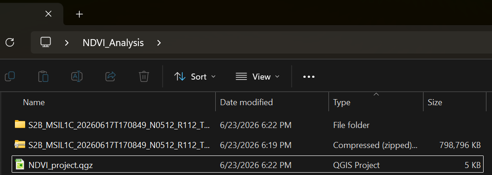
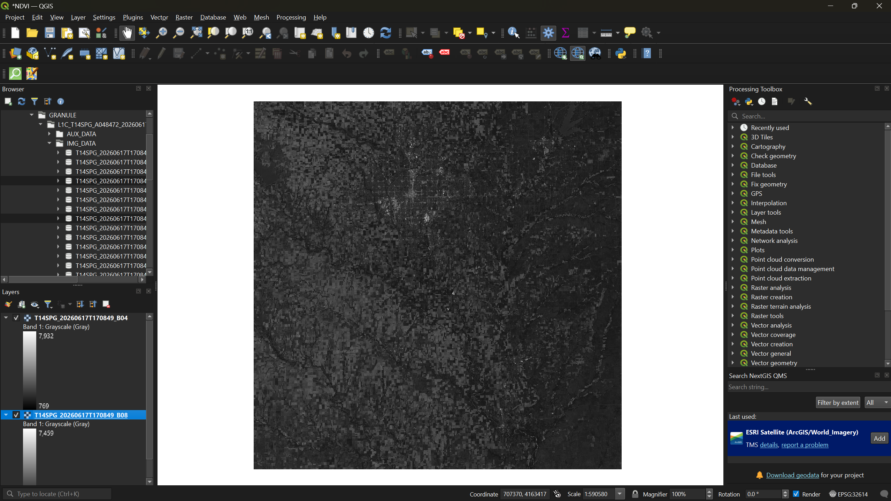
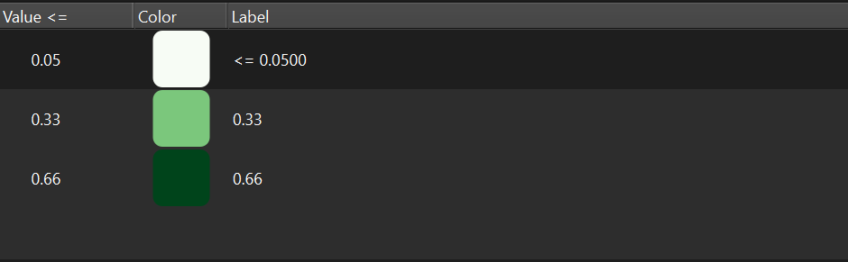
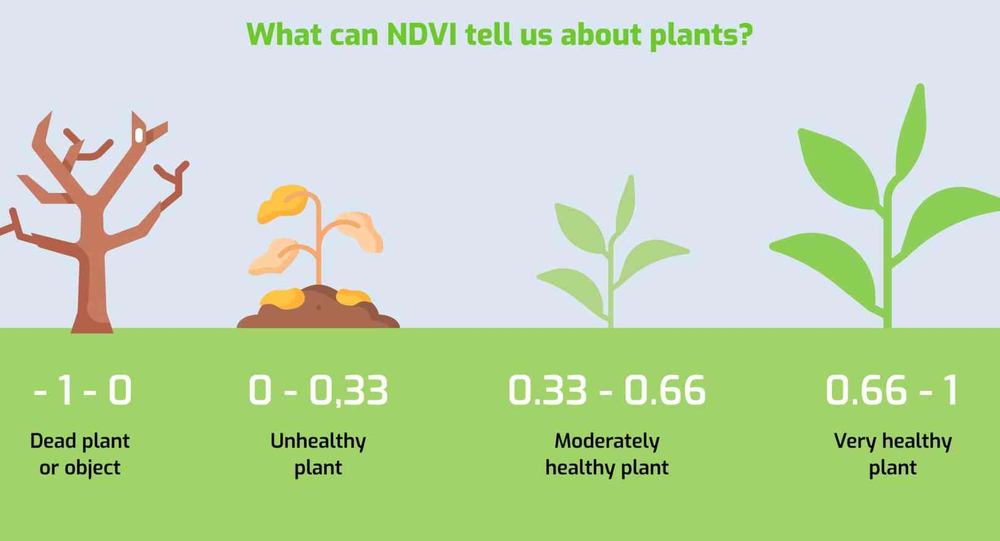
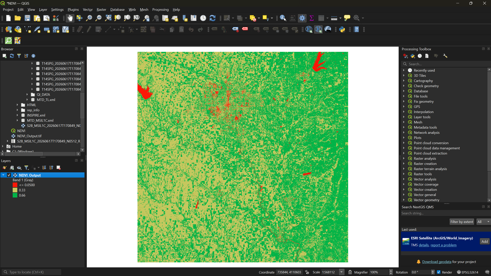
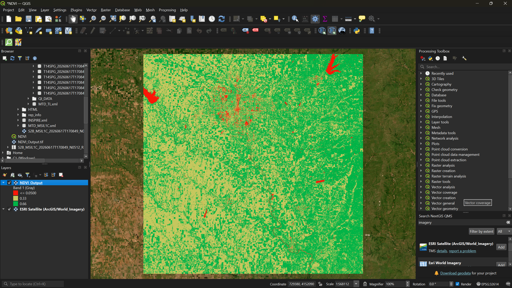

All in One View
Content from NDVI Analysis with Sentinel-2 Imagery
Last updated on 2026-06-25 | Edit this page
Estimated time: 45 minutes
Overview
Questions
- What is NDVI and what does it measure?
- How do I calculate NDVI from Sentinel-2 bands in QGIS?
- How do I interpret and visualize NDVI results?
Objectives
- Understand what NDVI measures and why it is useful
- Load individual Sentinel-2 spectral bands into QGIS
- Use the Raster Calculator to compute NDVI from red and near-infrared bands
- Apply pseudocolor symbology to interpret vegetation health
- Compare NDVI results against satellite basemap imagery
Introduction
A Normalized Difference Vegetation Index (NDVI) is a widely used landscape metric that quantifies the health and density of vegetation using satellite sensor data. It works by comparing the reflectance of red light (which vegetation absorbs) and near-infrared light (which healthy vegetation strongly reflects). The formula is:
NDVI = (NIR − Red) / (NIR + Red)
NDVI values range from −1 to +1. Values near +1 indicate dense, healthy vegetation; values near 0 indicate bare soil or sparse cover; and negative values typically indicate water, clouds, or snow.

In this exercise we will use a Sentinel-2 multispectral image to calculate NDVI for a region in south-central Kansas.
Sentinel 2 Atlas
Take a moment to explore Sentinel-2 Land Cover Living Atlas. Take a note of its features!
Step 1: Set Up Your Project
- Create a folder on your desktop called Session_3a (if you have not already done so from the setup page).
- Open QGIS, close any pop-ups, and go to Project → Save
As. Save the project as
NDVI_Projectinside your NDVI_Analysis folder.
Step 2: Download and Extract the Sentinel-2 Image
Navigate to the workshop’s shared resources Google Drive. Under Day 1_Session 3a: Basic raster functions, download the ZIP file:
S2B_MSIL1C_20260617T170849_N0512_R112_T14SPG_20260617T203803.SAFE.zip-
Save the ZIP file to your NDVI_Analysis folder and extract it:
- Windows: Right-click → Extract All
- Mac: Double-click the ZIP file

Step 3: Load the Red and NIR Bands
Sentinel-2 images contain 13 spectral bands stored as individual files. For NDVI we only need two:
-
Band 4 (Red) —
T14SPG_20260617T170849_B04.jp2 -
Band 8 (Near-Infrared) —
T14SPG_20260617T170849_B08.jp2
To find them:
- In the Browser Panel on the left side of QGIS, navigate to: Project Home → S2B_MSIL1C_…SAFE → GRANULE → L1C_T14SPG_… → IMG_DATA
- Drag B04 and B08 into the Layers Panel.

Toggle each layer’s visibility using the checkbox next to its name to see how the two bands differ — Band 4 captures visible red light, while Band 8 captures near-infrared reflectance that is invisible to the human eye but strongly reflected by healthy vegetation.
Step 4: Calculate NDVI with the Raster Calculator
- From the menu bar, select Raster → Raster Calculator.
- In the expression box, enter the NDVI formula. You can double-click the band names in the Raster Bands list to insert them:
( "T14SPG_20260617T170849_B08@1" - "T14SPG_20260617T170849_B04@1" ) / ( "T14SPG_20260617T170849_B08@1" + "T14SPG_20260617T170849_B04@1" )
- Click the three-dot button next to Output layer and
save it as
NDVI_Outputin your NDVI_Analysis folder. - Click OK to run the calculation.
Once the output loads, you can right-click Bands 4 and 8 in the Layers Panel and select Remove Layer — they are no longer needed.
Step 5: Apply Color Symbology
The raw NDVI output appears in grayscale. To make vegetation patterns visible, we need to apply a color ramp.
- Right-click the
NDVI_Outputlayer → Properties → Symbology tab. - Change the Render type to Singleband pseudocolor.
- Set Interpolation to Discrete.
- Set the Color ramp to Greens.
- Under the table, set the Mode to Equal Interval and reduce the Classes to 3.
- In the Value column, enter the following from
bottom to top:
0.66,0.33,0.05. - Click Apply.

Step 6: Refine the Color Scheme
The green-only ramp shows the classification, but we can make interpretation more intuitive by matching colors to vegetation health levels.

Using the reference scale above as a guide:
- Reopen the Symbology tab.
- Double-click each color swatch to change it:
- Bottom class (0.05–0.33) → Red — inanimate objects, bare soil, or dead vegetation
- Middle class (0.33–0.66) → Yellow — unhealthy or sparse vegetation
- Top class (0.66–1.0) → Green — dense, healthy vegetation
- Click Apply, then OK.

Exercise 1: Interpret the NDVI Map
Look at your NDVI output and try to answer the following:
- Can you identify Wichita (the largest city in the region)? What NDVI values dominate urban areas?
- Can you locate any lakes or rivers? What values do they show?
- Where is the densest vegetation — is it farmland, forest, or something else?
Write down your initial observations. We will check them against satellite imagery in the next step.
Step 7: Add a Basemap for Comparison
To verify your interpretations, add a satellite basemap underneath the NDVI layer.
- From the menu bar, select Plugins → Manage and Install Plugins.
- Search for QuickMapServices and click Install Plugin (if not already installed from Session 1a).
- After installation, a QMS panel should appear on
the right side of your screen. Search for
imageryand add Esri Satellite (ArcGIS/World_Imagery) to your map.
Now toggle the NDVI layer on and off in the Layers Panel to compare your NDVI classification against the actual satellite imagery.

Exercise 2: Verify Your Observations
Compare your NDVI results against the satellite basemap.
- Were your initial observations from Exercise 1 correct?
- Did anything surprise you — areas you expected to be vegetated that were not, or vice versa?
- Can you identify any agricultural fields? How do their NDVI values differ from surrounding natural vegetation?
- NDVI uses the ratio of near-infrared and red reflectance to quantify vegetation health and density.
- Sentinel-2 Bands 4 (Red) and 8 (NIR) are the inputs for NDVI calculation in QGIS.
- The Raster Calculator applies the NDVI formula on a per-pixel basis across the entire image.
- Thoughtful color symbology (red → yellow → green) makes NDVI results immediately interpretable.
- Comparing NDVI output against a satellite basemap helps validate your interpretation of the results.